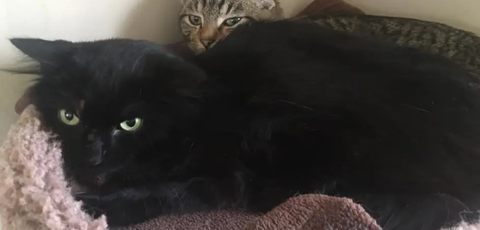

| Firnsong |
 |
Once in our care, Fernsong truly blossomed into the biggest cuddle-bug. He starts purring as soon as he sees us, follows us around the house and sleeps on our laps. He’s super affectionate and quite playful, though his energy doesn’t last long. |
Avaliable. |
| Hollypaw |
 |
Approximately 10 months old, Hollypaw came into our care as a part of a small colony we refer to as Younglings. Semi-feral and shyest of them all, she is still learning to trust us. She has shown some interest in toys, but so far, she’s quite reluctant to play. |
Not yet avaliable. |
| Briarpaw |
 |
Briarpaw is the bravest of the Younglings. Still in a kitten stage, she’s extremely playful and can entertain herself all day long. She’s so crazy she oftentimes annoys her cat dad, Hawkheart, by playing with his tail. |
Not yet avaliable. |
| Barkpaw |
 |
Barkpaw is Hollypaw’s littermate. She’s still quite shy but has started enjoying some pets and bum scratches. She’s curious but cautious. Rather quiet, too. Unlike Briarpaw, she’s not in a rush to play. Still quite young, her personality is not yet fully developed, so we cannot tell what she will be like as an adult. |
Not yet avaliable. |
| Hawkheart |
 |
Hawkheart mostly keeps to himself. He enjoys some attention and play time but, at the end of the day, he’s quite happy to lounge on a cat tree or look out the window. He’s getting used to his indoor life, but still wants to be outdoors. |
Not yet avaliable. |